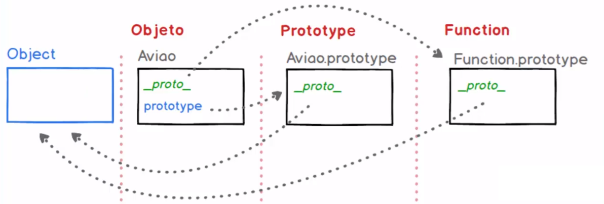

A necessidade de se estudar a prototipação de objetos no javascript vem da necessidade de esmiuçar o pilar da Herança.
Herança é um dos pilares da Orientação a Objetos, já visto, implementado e testado em outras aulas, porém como em outras linguagens qualquer objeto criado também é herdado de classes maiores e mais genéricos.
No js todo objeto é herdado da classe Objects e por trás destas heranças existe a implementação de PROTOTYPES, que é específico e intrínseco ao próprio javascript.
Como exemplo de estudo será criado um objeto para modelar um avião, de forma rústica e simplificada, terá poucos atributos e apenas um método.
Este mesmo objeto será instanciado 3 vezes, ou seja, serão criados 3 objetos aviões, criados de forma distinta: a1 criado de forma literal, a2 por uma função construtora e a3 criado a ártir de uma classe definida.
Primeira observação: todos os objetos criados, independente da forma como isso ocorreu, possuem um atributo comum, chamado __proto__ cujo conteúdo é um objeto, não criado por classe, mas por uma função, chamada Object.
__proto__, por sua vez, possui atributos e métodos específicos que podem ser acessados quando necessário.
Tratamento de herança significa que o atributo __proto__ de um objeto pode ser redefinido, de forma que o primitivo de uma instância criada seja outro objeto. Na essência, como todos os ojbetos são heranças de outros, dentro da "prototype chain", mesmo um objeto num nível mais acima, herdado de outro, terá os atributos herdados de Object.
No exemplo da herança, 3 classes (ave, vertebrado e animal) são criadas, uma sendo protótipo da outra, portanto herdando e carregando á frente seus atributos. Como essa herança ocorre de forma explícita o conteúdo destes atributos também pode ser acessado e alterado.